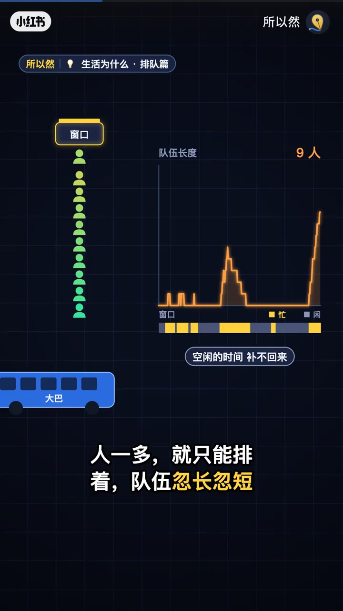
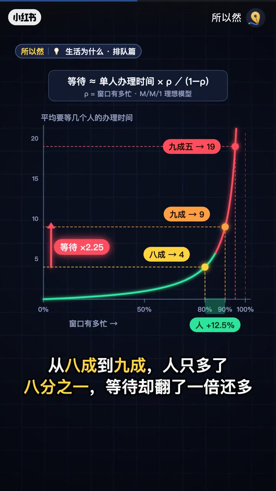

内容要点
知识结构
[00:00→00:50]
忙与等待
窗口越忙等待越长；给出ρ与等待的非线性关系。
[00:50→01:10]
关键对比
八成→九成，人+12.5%，等待翻倍还多。
[01:10→01:51]
三招
错峰、分时预约、一条长队多窗口叫号。
总结
接近满负荷时，客流微增也会让等待猛涨；削峰比加窗有时更有效。
图文实录
窗口一忙，等待上窜
00:00 – 00:50
动画给出等待≈单人办理时间×ρ/(1-ρ)。忙到八成平均等4个办理时间，九成等9，九成五等19。
[00:11]开场：人只多一点，队伍却长一截
Opening: a little more crowd, a much longer queue

[00:33]窗口越忙，空闲补不回来，只能排着
Busy windows can’t reclaim idle time—you can only wait
人多一成，等待翻倍
00:50 – 01:10
从八成到九成，人只多八分之一，等待却翻倍还多——非线性是直觉漏洞。
从八成到九成，人只多了八分之一，等待却翻了一倍还多

[00:56]曲线：八成→4，九成→9，等待翻倍还多
Curve: 80%→4, 90%→9; wait more than doubles
少排队三招
01:10 – 01:51
错峰：人少一成，忙碌降、等待近乎减半。分时预约：同量人均匀进场。单队多窗叫号：避免各排各的碰到慢窗口全队卡住。
第一招，错峰
第二招，分时预约
第三招，一条长队，多个窗口叫号
[01:18]对策一/二：错峰与分时预约
Tips 1–2: off-peak timing and timed reservations
[01:40]对策三：一条长队，多窗口叫号
Tip 3: one line feeding multiple windows